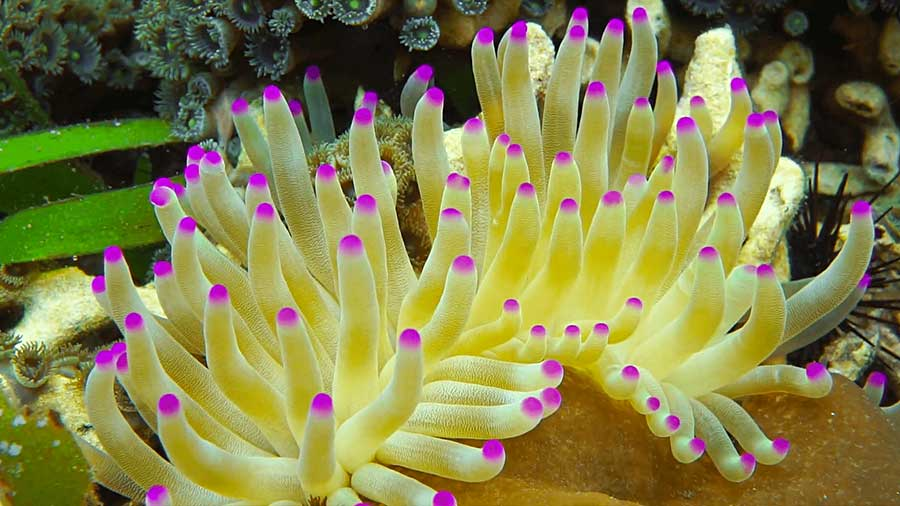

Pink-tipped coral refers to various coral species with distinct pink-colored tips on their branches or polyps, often found in shallow tropical reef environments. These corals are typically hard corals from genera like *Seriatopora* or *Acropora*, known for their branching structures that provide shelter for marine life. The pink tips result from a combination of pigmentation and the presence of symbiotic algae, called zooxanthellae, which aid in photosynthesis. Pink-tipped corals thrive in clear, warm waters but are vulnerable to threats like coral bleaching, pollution, and habitat destruction, making their preservation essential for healthy reef ecosystems.
PINK-TIPPED
